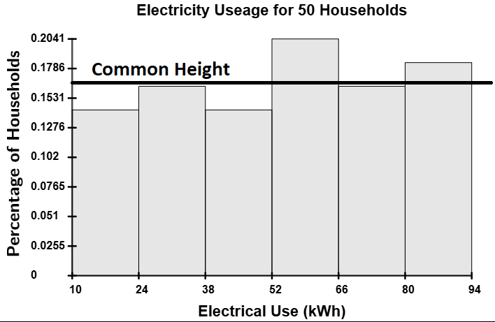

Calculating the Mode of a Dataset
The mode is a measure of central tendency that identifies the most frequently occurring value(s) in a dataset. Unlike the mean and median, the mode does not require numerical calculations but instead focuses on how often values appear. In this section, we will define the mode, discuss its characteristics, and explore examples of how to determine and interpret it.
Mode
What is the Mode?
The mode of a dataset is the value(s) that occur locally with the highest frequency.
What Does "Occur Locally" Mean?
When discussing the shape of histograms, we encountered unimodal, multimodal, and uniform distributions. The mode corresponds to the peaks in these distributions.
- A unimodal distribution has one peak.

- A multimodal distribution has multiple peaks with similar frequencies.

- A uniform distribution has no distinct peaks, meaning no mode exists.

Identifying these peaks precisely requires advanced mathematical techniques, such as calculus, even though many multimodal distributions are intuitive and can be visualized easily with histograms, stem-and-leaf plots, and dot plots. (Human height, for example, is bimodal because there is a mode for men's height and a mode for women's height since, on average, men tend to be about five inches taller than women.) Therefore, we will refine our definition of mode to avoid local considerations.
Definition: Mode
The mode of a dataset is the value(s) that occur most frequently.
What Changed in This Definition?
By removing the term "occur locally," we ensure that all identified modes have the same frequency. This revised definition makes it easier to identify all the modes at a glance from frequency distributions.
Example
Find the mode of the 2016-2017 tuition and fees (in thousands of dollars) for the top 14 universities in the U.S. by hand.
| Tuition and Fees | ||||||
|---|---|---|---|---|---|---|
| 45 | 47 | 52 | 49 | 55 | 48 | 48 |
| 51 | 51 | 50 | 51 | 48 | 51 | 51 |
Solution
By observation, the most frequently occurring value is 51, which appears five times.
Thus, the mode is 51.
$$\tag*{\(\blacksquare\)}$$
Example
The following LSAT scores for a sample of 50 students are recorded below. Use the Summary Statistics Calculator to determine if a mode exists, and if it does, identify the mode(s). Also, classify the dataset as unimodal, multimodal, or having no mode.
| LSAT Scores | |||||||||
|---|---|---|---|---|---|---|---|---|---|
| 174 | 172 | 169 | 176 | 169 | 170 | 175 | 171 | 168 | 177 |
| 165 | 180 | 173 | 166 | 178 | 170 | 174 | 167 | 179 | 172 |
| 163 | 181 | 171 | 164 | 177 | 169 | 175 | 168 | 180 | 170 |
Solution
Copy the data and enter it into the Summary Statistics Calculator.
Click on the Mode Checkbox.
The tool reveals that 169 and 170 are the modes of the data set, and indicates that this is a bimodal set, which is a type of multimodal distribution.
$$\tag*{\(\blacksquare\)}$$
The mode is particularly useful to summarize certain types of qualitative data. Unfortunately, the Summary Statistics Calculator does not handle qualitative data. Therefore, we will use the Frequency Distribution Tool to make a frequency distribution of the data and then find the data point(s) with the highest frequency.
Example
The following dataset represents the size of shirts sold over the last 30 days at a clothing retailer. Use the Frequency Distribution Tool to determine the mode of the dataset.
| Shirt Sizes | |||||||||
|---|---|---|---|---|---|---|---|---|---|
| Small | Medium | Large | X-Large | X-Large | Medium | Large | X-Large | Small | X-Large |
| Medium | X-Large | X-Large | Large | Small | X-Large | Medium | X-Large | Large | X-Large |
| X-Large | X-Large | Large | Small | Medium | X-Large | X-Large | X-Large | Large | Medium |
| X-Large | Large | Medium | X-Large | X-Large | Small | Medium | Large | X-Large | X-Large |
| Large | X-Large | Medium | Small | X-Large | X-Large | X-Large | Large | Small | Medium |
Solution
Load the data into the Frequency Distribution Tool, and nothing should appear since we only make classes with quantitative data.
To display a frequency distribution of the raw data, deselect the 'Organize Data Into Classes' checkbox. The distribution will then appear on the right.

From the distribution, the most frequently sold size was X-Large, with a count of 23.
Conclusion
The mode helps identify the most common values in a dataset, making it useful for analyzing both quantitative and qualitative data. Unlike the mean and median, the mode may not always exist and can have multiple values. By understanding how to determine the mode and classify distributions as unimodal, multimodal, or having no mode, we gain deeper insights into data patterns.